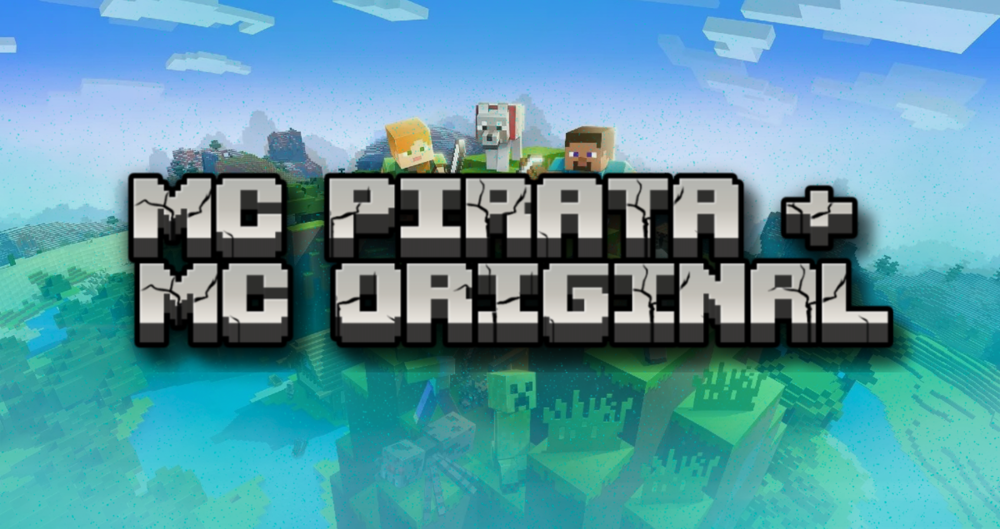

Eleve sua Experiência no Minecraft
Desfrute de melhor FPS, mods integrados e muito mais com nosso servidor customizado
Baixar Arquivos do Servidor
O download só está disponível em computadores.

Desfrute de melhor FPS, mods integrados e muito mais com nosso servidor customizado
Baixar Arquivos do ServidorServidor otimizado com mods para garantir um desempenho fluido e estável.

Uma grande variedade de mods para enriquecer e melhorar a experiência de jogo.
Compatível com Minecraft pirata e original — jogue do jeito que preferir e com seus amigos.
No seu launcher do minecraft você vai ter que criar um
perfil, Com o Minecraft na Versão: 1.20.1, Forge na Versão:
1.20.1, Com o ModLoader na opção: 47.4.4, isso independente do
Launcher
que você usar,


Verifique se o IP do servidor está correto e se sua internet está funcionando. Nossa equipe também pode ajudar no Discord: https://discord.gg/mxGBvZQEZf